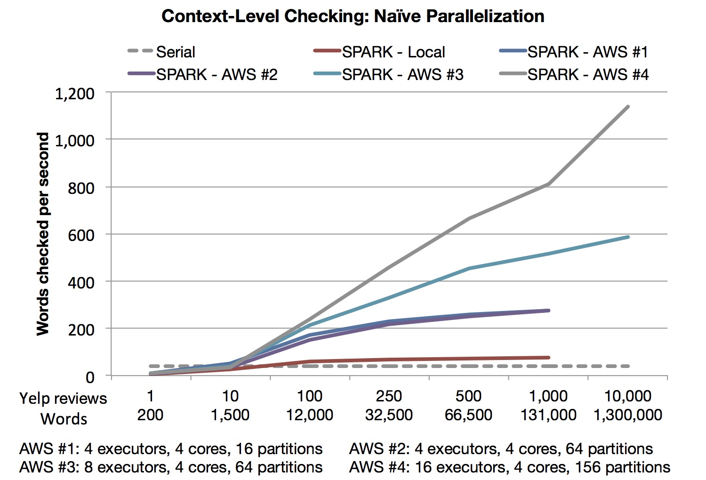
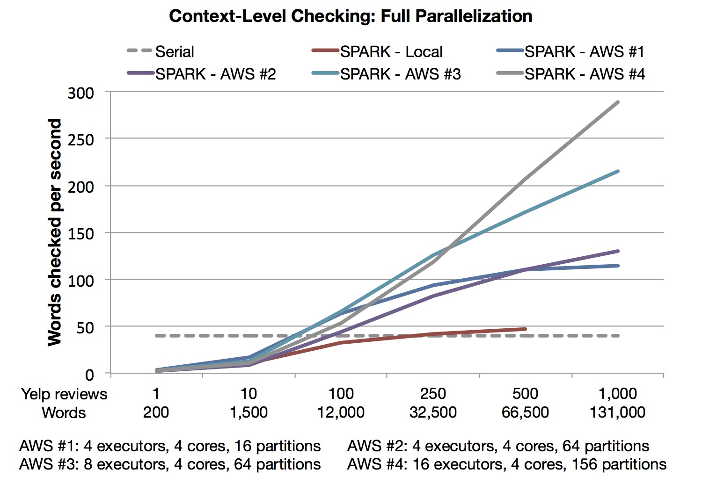

Context-Level Checking: Naive Parallelization
Using this approach, we were able to check up to 78 words per second locally, and over 1,100 words per second on Amazon AWS on the largest cluster we tested.

Context-Level Checking: Full Parallelization
We found that this approach did not scale as well, and that we were only able to achieve 47 words per second locally and 289 words per second on AWS on the largest cluster we tested. This is most likely due to the higher complexity of the implementation.
